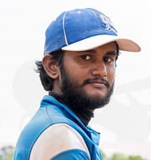

Baseball
Baseball
Baseball is a bat-and-ball game played between two opposing teams who take turns batting and fielding. The game proceeds when a player on the fielding team, called the pitcher, throws a ball
which a player on the batting team tries to hit with a bat.
The objective of the offensive team (batting team) is to hit the ball into the field of play, allowing its players to run the
bases, having them advance counter-clockwise around four bases to score what
are called "runs".
The objective of the defensive team (fielding team) is to prevent batters from becoming runners, and to prevent runners' advance around the bases.A run is scored when a runner legally advances
around the bases in order and touches home plate (the place where the player started as a batter). The team that scores the most runs by the end of the game is the winner.
UOK Baseball
> There is onebaseball team (Men) in the UOK.
> Baseball men team won the championship of the Inter University Championship-2017.
|  | |
| Nelaka Vindula Captain Faculty of Science 0711118046 |
Kanishka Gayan Vice-Captain Faculty of Commerce and Management Studies 0770200438 |
24 |
2 |
Contact Us :
University of Kelaniya,
Dalugama, Kelaniya,
Sri Lanka, 11600.
Tel: +94 (0) 112 903 201
Fax: +94 (0) 112 903 203
Email: deansc@kln.ac.lk
©2019 University of Kelaniya. All Rights Reserved. Designed By the Faculty Web Team